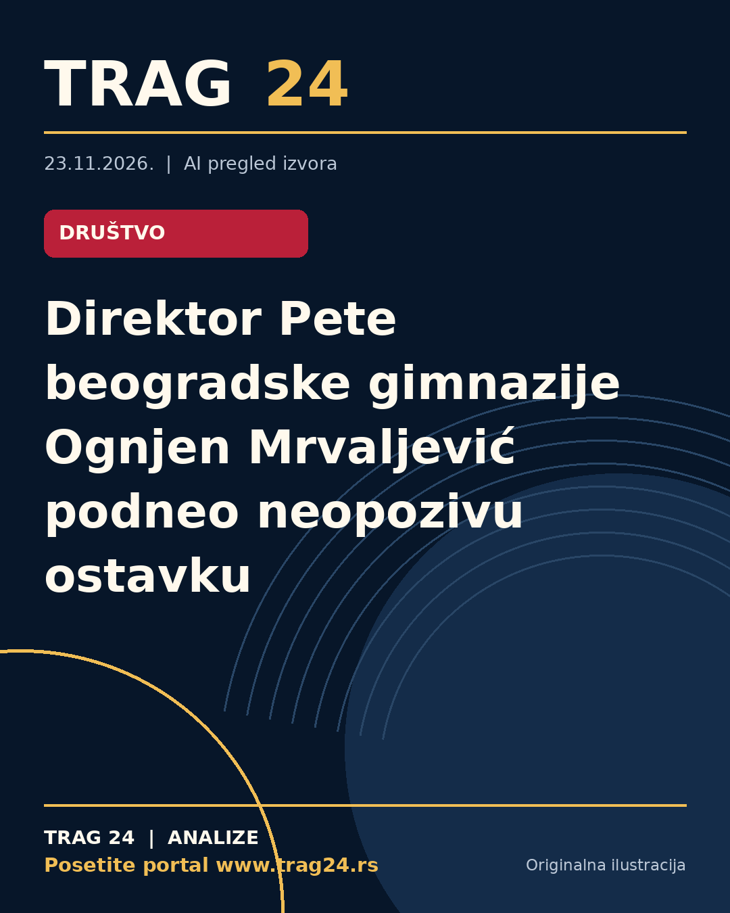

Direktor Pete beogradske gimnazije Ognjen Mrvaljević podneo neopozivu ostavku

ŠTA SE DOGODILO
Direktor Pete beogradske gimnazije u Beogradu, Ognjen Mrvaljević, podneo je neopozivu ostavku na tu funkciju. Ova odluka usledila je nakon što je Mrvaljević 1. novembra 2026. godine priveden, a on je u posebnom saopštenju obrazložio svoj potez.
HRONOLOGIJA
Ognjen Mrvaljević imenovan je na mesto direktora Pete beogradske gimnazije 24. februara 2026. godine, nakon isteka mandata prethodne direktorke Danke Nešović. Događaj privođenja usledio je 1. novembra 2026. godine, a ostavku je podneo zvanično 23. novembra iste godine.
ŠTA NAVODE IZVORI
Mondo prenosi da je Mrvaljević zahvalan kolektivima škole koji su mu iskazali podršku, ali ističe da razume prestrašenost pojedinih kolega zbog mogućeg medijskog linča. Saopštio je da očekuje poništenje konkursa za direktora pod pritiscima politike. Euronews i B92 potvrđuju podnošenje ostavke, navodeći da je Mrvaljević direktor od februara i podsećaju na njegov privođenje. B92 donosi i dodatne informacije o opštoj situaciji u Srbiji, koje nisu vezane za sam događaj ostavke.
ŠTA JE POTVRĐENO
Potvrđeno je da je Ognjen Mrvaljević podneo neopozivu ostavku na mesto direktora Pete beogradske gimnazije, što je on i sam saopštio. Takođe je potvrđeno da je bio priveden početkom novembra 2026. godine. Njegovo saopštenje sadrži i stavove o pritiscima i političkim okolnostima vezanim za konkurs za direktora škole.
ŠTA NIJE POTVRĐENO
Nije potvrđeno zbog čega je tačno Mrvaljević priveden, niti da li postoji zvanična odluka ministarstva prosvete o poništenju konkursa za direktora Pete beogradske gimnazije. Takođe nema potvrde o daljim koracima Ministarstva prosvete ili drugih relevantnih institucija nakon njegove ostavke.
ŠTA OSTАJE OTVORENO: Ostaje otvoreno pitanje budućeg statusa direktora škole, kao i da li će konkurs za direktora biti poništen ili biće raspisan novi. Takođe nije poznato kako će se ova promena odraziti na rad i kolektiv Pete beogradske gimnazije, niti eventualni dalji razvoj situacije u vezi sa privođenjem Mrvaljevića.
Izvori
- https://mondo.rs/Info/Drustvo/a2315813/direktor-pete-beogradske-gimnazije-podneo-ostavku.html
- https://www.euronews.rs/srbija/drustvo/253375/ognjen-mrvaljevic-podneo-neopozivu-ostavku-u-petoj-gimnaziji/vest
- https://www.b92.net/info/drustvo/287557/direktor-pete-beogradske-gimnazije-ognjen-mrvaljevic-podneo-ostavku/vest
Ova analiza je pripremljena uz pomoć veštačke inteligencije na osnovu javno dostupnih izvora. Navodi izvora nisu nužno nezavisno potvrđeni.